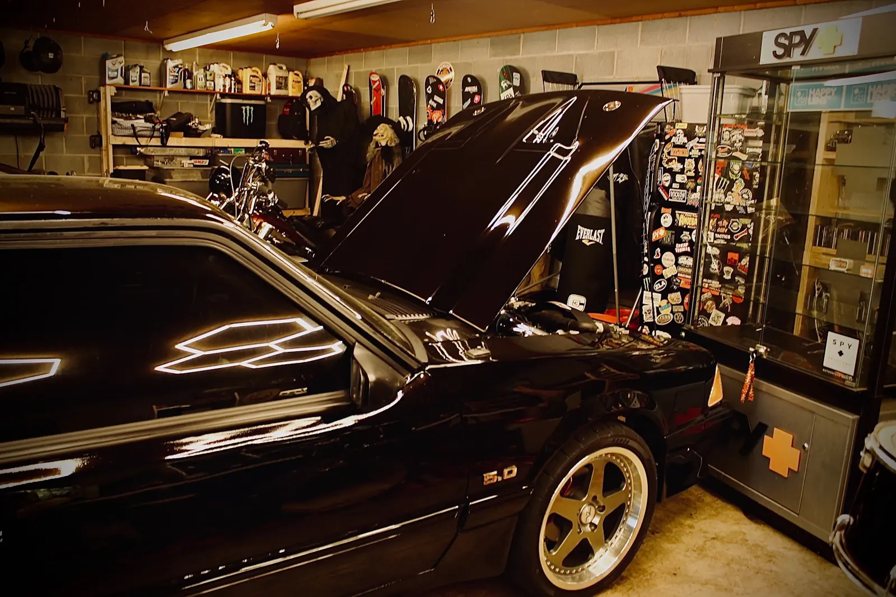
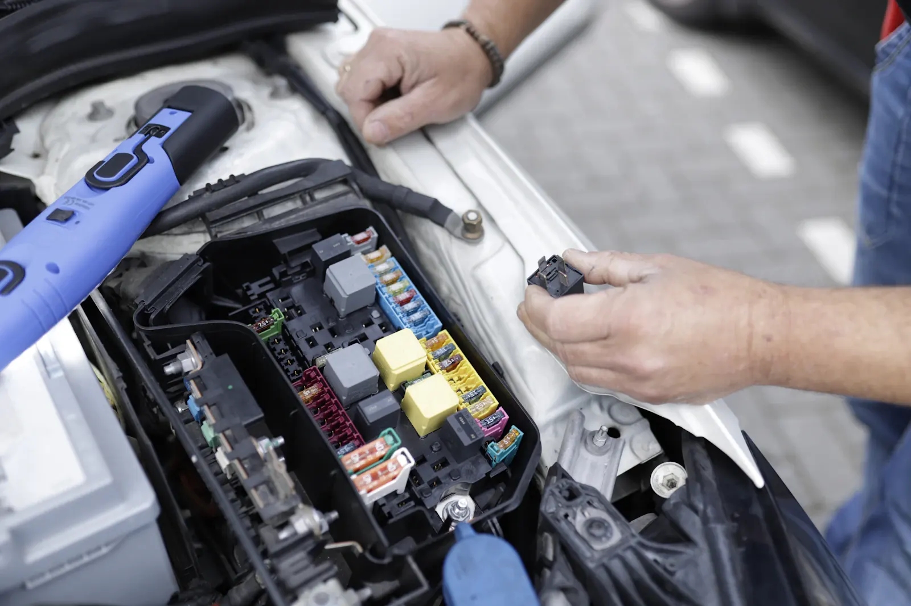

01 Диагностика
Опрос, осмотр, инструментальная проверка по симптомам.
Вывод о причине и предложенный порядок действий.
Диагностика / Регламент / Ремонт
Загорелся индикатор, появился новый звук или подошло время обслуживания? Начнём с проверки. Работы — после понятного объяснения и согласования.
Разобраться с симптомом
01 / С чего начать
Выберите знакомый симптом. Это поможет подготовить обращение, но не заменяет осмотр и диагностику.
ПЛАН ПЕРВИЧНОЙ ПРОВЕРКИ / 01
Если индикатор красный или есть признаки перегрева, безопасно остановитесь и следуйте руководству автомобиля.
Добавить к обращению02 / Основные задачи
Не объединяем всё в один «комплекс». У каждой задачи есть состав работ и понятный результат.
Опрос, осмотр, инструментальная проверка по симптомам.
Вывод о причине и предложенный порядок действий.
Проверка пробега и истории, подбор операций по регламенту автомобиля.
Перечень согласованных работ и расходных материалов.
Проверка износа, люфтов, утечек и состояния соединений.
Список замечаний с приоритетом устранения.
Проверка питания, проводки, соединений и связанных компонентов.
Зафиксированная причина сбоя и план восстановления.

03 / Порядок в работе
Что беспокоит, когда появилось и какие работы уже проводились.
Объяснить обнаруженное. Отделить срочные работы от рекомендаций.
Определить состав, материалы, стоимость и срок. Изменения — отдельным согласованием.
Контроль выполненных работ и рекомендации по дальнейшему наблюдению.
04 / До визита
Марку, модель, год и пробег. Если есть симптом — когда он появляется, зависит ли от скорости, температуры или нагрузки. История предыдущих работ тоже помогает.
Сначала стоит подтвердить причину неисправности и точную применимость детали. Назначение замены только по коду ошибки может привести к лишним расходам.
Запись звука полезна как исходная информация, особенно если симптом проявляется редко. Для вывода всё равно может понадобиться осмотр, проверка на подъёмнике или дорожный тест.
В этом концепте формируется только текст обращения. Дата остаётся пожеланием: фактическое время нужно согласовать с выбранным сервисом.
05 / Обращение в сервис
Короткое описание полезнее догадки о том, какую деталь менять. Соберите исходную информацию в одном обращении.
Дата в форме — пожелание.
Время визита требует согласования.